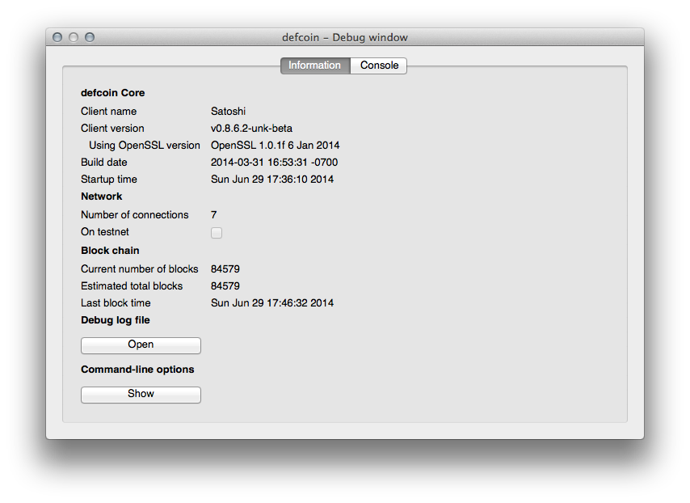
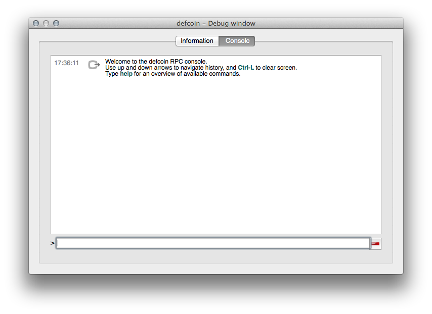
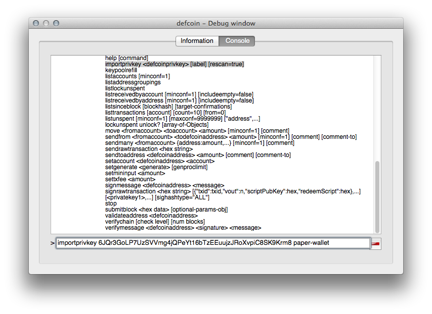
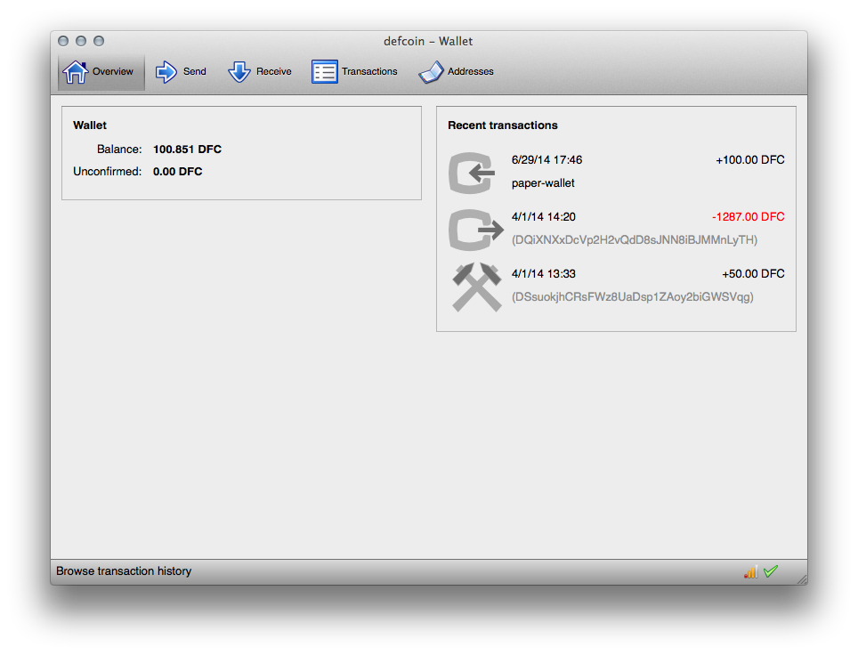

Step 1 - Install and run a wallet app
It doesn't matter which OS you use. The instructions are going to be the same for each.

When you launch the app for the first time you will see a blank wallet with a zero balance. The app will immediately attempt to connect to other computers over the Internet and download the DEFCOIN blockchain. This will take a few minutes and will probably make your laptop fans spin up. Don't panic: You can start the next step while the blockchain is downloaded and verified.
Step 2 - Open the Debug Console
Click on the "Help" menu, then "Debug Window". Then click on the "Console" button.


Step 3 - Import the *PRIVATE* key from the paper wallet
Use the "importprivkey" command to import the privkey. The private key is the one on the INSIDE of the wallet. It's long, so you might want to use the QR code to convert it to text.
UPDATE: Lizzz Farrell has informed us that you must first enter your passphrase using the "walletpassphrase" command if you have encrypted your wallet.

(Don't bother trying to import the key in the image above... the coins are long gone.)
Step 4 - Profit!
We'll skip the usual ???? step and go straight to the money shot.

Now what?
You should now have a non-zero number of DEFCOINS in your wallet. You can now exchange them for goods and services. For maximum portability we recommend using the Android wallet (courtesy of Justin Culbertson). You can't import wallets into the Android wallet because blockchains are huge and will fill up your phone. You can, however, transfer some or all of the coins from your desktop/laptop wallet to your mobile wallet and start spending.
We would appreciate it if you tweeted any funny and/or interesting transactions to @defcoin so we can establish a rough exchange rate. If you're sending a beer/DFC number please include the type of beer. If it was swag please tell us the name of the vendor. If it was a sex act please send pictures to @kingtuna and @shitroamersays.
{kind=link}
{kind=link}
{kind=link}
{kind=link}